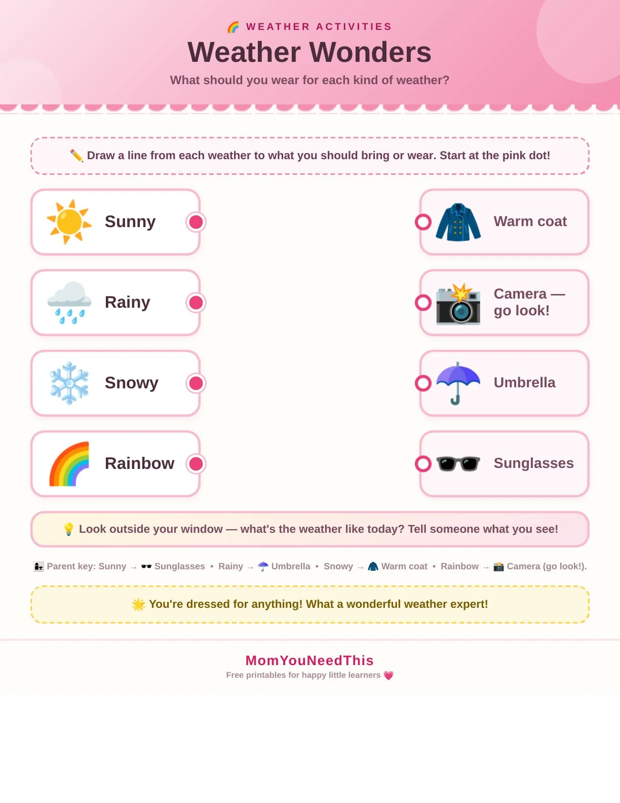

🌈 Weather Wonders Nature's Most Amazing Shows
Rainbows, lightning, hail — weather can be truly wondrous. These exciting activities explore nature's most spectacular sky shows in safe, awe-filled ways.
Quick Answer
This free printable weather wonders activity introduces toddlers and preschoolers (ages 2–5) to the sky's greatest shows: rainbows, lightning and thunder, hail, and snow. Kids learn how a rainbow forms (sunshine and rain at the same time), why thunder follows lightning, and how to watch storms safely from inside. Download and print at home with no signup needed.
At a Glance
- Ages: Toddlers and preschoolers (ages 2–5)
- Activity: How rainbows form; thunder, lightning and hail explained for kids
- Skills: Weather science and storm safety
- Format: Printable worksheet (PDF)
- Cost: Free, no signup
Most weather is ordinary — sun, cloud, a bit of rain. This page is about the other kind: the weather that makes children run to the window. Wonders are wonderful partly because they are rare and brief, so a child who has explored them on paper is ready to really see them when the sky performs — and to know what they are looking at.
🌈 Explore Weather Wonders
Learn how rainbows form, explore storms safely, and marvel at weather's greatest wonders.
💡 How To Use This Activity
Print these pages while the sky is putting on a show, or just after one. Rainbows, thunder and hail are easier to explore on paper once a child has seen the real thing — talk through what they noticed outside, then find it again in the pictures. The print button opens the full-size page in a new tab if you prefer to print from there.

🖨️ Download Your Free Weather Wonders Printable
Learn how rainbows form, explore storms safely, and marvel at weather's greatest wonders. Print it out, grab the crayons, and you're ready — no signup needed.
⬇️ Download Free Printable 🖨️ Print🎁 Free printable for toddlers & preschoolers
🌈 Weather Wonders, Explained Simply
Rainbows appear when the sun shines through rain — you need both at once, which is why rainbows love the moment a shower is ending. The raindrops bend the sunlight and split it into its colors, always in the same order: red, orange, yellow, green, blue, indigo, violet. A rainbow is a full circle, actually — from the ground we only see the arc.
Lightning and thunder are the same event arriving twice. Lightning is a giant spark inside a storm cloud; thunder is the sound it makes. Light travels almost instantly and sound dawdles, so you always see the flash first. Counting the seconds between flash and rumble — one-Mississippi, two-Mississippi — tells you roughly how far away the storm is: about a mile for every five seconds.
Hail is ice that falls instead of rain: raindrops caught in a storm cloud get tossed up into freezing air again and again, growing a new icy layer each trip, until they are too heavy and drop. Hailstones are the storm's way of showing you how strong its winds are.
And the safety rule that wraps the whole topic: wonders are watched from inside, or from a porch under cover — never under a tree, never in an open field, and thunder always means the show is watched through glass.
❓ Weather Wonders FAQs
What activities are included in Weather Wonders?
This page collects our free weather wonders printables in one place: how rainbows form, thunder and lightning explained for kids, hail and other storm wonders, and watching weather safely. Download the printable below and start learning right away.
Are these activities really free?
Yes — every printable on MomYouNeedThis is 100% free to download and print. No signup, no payment, just tap the download button. Keep a copy near a window if you can — these pages are at their best in the ten minutes after a real storm or rainbow. Keep a copy near a window if you can — these pages are at their best in the ten minutes after a real storm or rainbow.
How do I use these activities with my child?
Time it with the sky. Print the pages during or just after real weather — a rainbow, a thunderstorm watched from inside, a hail shower — and talk through what your child noticed outside before finding it in the pictures. The flash-to-thunder counting game (count the seconds, divide by five for miles) can be played from any window, no printable required.